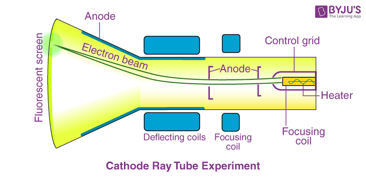

Atomic Structures
What is Atomic Structures?
The atomic structure of an element refers to the constitution of its nucleus and the
arrangement of the electrons around it. Primarily, the atomic structure of matter is made up of protons,
electrons
and neutrons.
The protons and neutrons make up the nucleus of the atom, which is surrounded by the electrons belonging to the
atom. The atomic number of an element describes the total number of protons in its nucleus.
Electron Orbits
Nucleus
Protons
Neutrons
Electrons
Move the atoms to Orbit
Neutral atoms have equal numbers of protons and electrons. However, atoms may gain or lose electrons in order to
increase their stability, and the resulting charged entity is called an ion.
Atoms of different elements have different atomic structures because they contain different numbers of protons
and
electrons. This is the reason for the unique characteristics of different elements.
Atomic Models
The earliest belief about the structure of the atom was attributed to Dalton, who suggested that matter was made
of tiny indivisible particles called Atoms.
The discovery of electrons proved for the first time that atoms themselves were made of fundamental particles,
which were the constituents of all atoms and therefore, atoms did have a fine structure that was unique to every
different atom.
Therefore, this discovery of electrons proved that some particles were themselves the fundamental building
blocks
of atoms.
In the 18th and 19th centuries, many scientists attempted to explain the structure of the
atom with the help of atomic models. Each of these models had its own merits and demerits and was pivotal to the
development of the modern atomic model. The most notable contributions to the field were by the scientists such
as John Dalton, J.J. Thomson, Ernest Rutherford and Niels Bohr. Their ideas on the structure of the atom are
discussed in this subsection.
Solid Sphere Model - Daltons Atomic Theory
The English chemist John Dalton suggested that all matter is made up of atoms, which were
indivisible and indestructible. He also stated that all the atoms of an element were exactly the same, but the
atoms of different elements differ in size and mass.
Chemical reactions, according to Daltons atomic theory, involve a rearrangement of atoms to form products.
According to the postulates proposed by Dalton, the atomic structure comprises atoms, the smallest particle
responsible for the chemical reactions to occur.
The following are the postulates of his theory:
- Every matter is made up of atoms.
- Atoms are indivisible.
- Specific elements have only one type of atom in them.
- Each atom has its own constant mass that varies from element to element.
- Atoms undergo rearrangement during a chemical reaction.
- Atoms can neither be created nor destroyed but can be transformed from one form to another.
Daltons atomic theory
successfully explained the Laws of chemical reactions, namely, the Law of conservation of mass, the Law of
constant properties, the Law of multiple proportions and the Law of reciprocal proportions.
Demerits of Daltons Atomic Theory
The theory was unable to explain the existence of isotopes.
Nothing about the structure of the atom was appropriately explained.
Later, scientists discovered particles inside the atom that proved the atoms are divisible.
The discovery of particles inside atoms led to a better understanding of chemical species; these particles
inside
the atoms are called subatomic particles. The discovery of various subatomic particles is as follows:
Plum Pudding Model - Thomson Atomic Model
The English chemist Sir Joseph John Thomson put forth his model describing the atomic structure in the early
1900s.
He was later awarded the Nobel Prize for the discovery of electrons. His work is based on an experiment called
the cathode ray experiment. The construction of working of the experiment is as follows:
Cathode Ray Experiment
The English chemist Sir Joseph John Thomson put forth his model describing the atomic structure in the early
1900s.
He was later awarded the Nobel Prize for the discovery of electrons. His work is based on an experiment called
the cathode ray experiment. The construction of working of the experiment is as follows:
Cathode Ray Experiment
It has a tube made of glass which has two openings, one for the vacuum pump and the other for the inlet through
which a gas is pumped in.

The role of the vacuum pump is to maintain a partial vacuum inside the glass chamber. A high-voltage power
supply is connected using electrodes, i.e., cathode and anode, which are fitted inside the glass tube.
Observations:
- When a high voltage power supply is switched on, there are rays emerging from the cathode towards the
anode.
This
was confirmed by the Fluorescent spots on the ZnS screen used. These rays were called Cathode Rays.
-
When an external electric field is applied, the cathode rays get deflected towards the positive electrode,
but
in
the absence of an electric field, they travel in a straight line.
- When rotor Blades are placed in the path of the cathode rays, they seem to rotate. This proves that the
cathode
rays are made up of particles of a certain mass so that they have some energy
- With all this evidence, Thompson concluded that cathode rays are made of negatively charged particles
called
electrons.
- On applying the electric and magnetic field upon the cathode rays (electrons), Thomson found the
charge-to-mass
ratio (e/m) of electrons. (e/m) for electron: 17588 1011 e/bg.
From this ratio, the charge of the electron was found by Mullikin through an oil drop experiment. [Charge of e
=
1.6 10-16 C and Mass of e = 9.1093 10-31 kg].
Nuclear Model - Rutherford Atomic Model
Rutherford Atomic Model The plum pudding model given by J. J. Thomson failed to explain certain experimental
results associated with the atomic structure of elements. Ernest Rutherford, a British scientist conducted an
experiment and based on the observations of this experiment, he explained the atomic structure of elements and
proposed Rutherfords Atomic Model.
Rutherfords Alpha Scattering Experiment
Rutherford conducted an experiment by bombarding a thin sheet of gold with -particles and then studied the
trajectory of these particles after their interaction with the gold foil.
Rutherford Atomic Model and Limitations
Rutherford, in his experiment, directed high energy streams of -particles from a radioactive source at a thin
sheet (100 nm thickness) of gold. In order to study the deflection caused to the -particles, he placed a
fluorescent zinc sulphide screen around the thin gold foil. Rutherford made certain observations that
contradicted
Thomsons atomic model.
Observations of Rutherfords Alpha Scattering Experiment
The observations made by Rutherford led him to conclude that:
- A major fraction of the -particles bombarded towards the gold sheet passed through the sheet without any
deflection, and hence most of the space in an atom is empty.
- Some of the -particles were deflected by the gold sheet by very small angles, and hence the positive
charge
in an
atom is not uniformly distributed. The positive charge in an atom is concentrated in a very small volume.
- Very few of the -particles were deflected back, that is only a few -particles had nearly 180o angle of
deflection. So the volume occupied by the positively charged particles in an atom is very small as compared
to
the
total volume of an atom.
Rutherford Atomic Model
Based on the above observations and conclusions, Rutherford proposed the atomic structure of elements. According
to the Rutherford atomic model:
- The positive charge and most of the mass of an atom is concentrated in an extremely small volume. He
called
this
region of the atom as a nucleus.
- Rutherfords model proposed that the negatively charged electrons surround the nucleus of an atom. He also
claimed
that the electrons surrounding the nucleus revolve around it with very high speed in circular paths. He
named
these circular paths as orbits.
- Electrons being negatively charged and nucleus being a densely concentrated mass of positively charged
particles
are held together by a strong electrostatic force of attraction
-
Limitations of Rutherford Atomic Model
Although the Rutherford atomic model was based on experimental observations, it failed to explain certain
things.
- Rutherford proposed that the electrons revolve around the nucleus in fixed paths called orbits. According
to
Maxwell, accelerated charged particles emit electromagnetic radiations and hence an electron revolving
around
the
nucleus should emit electromagnetic radiation. This radiation would carry energy from the motion of the
electron
which would come at the cost of shrinking of orbits. Ultimately the electrons would collapse in the nucleus.
Calculations have shown that as per the Rutherford model, an electron would collapse into the nucleus in
less
than
10-8 seconds. So the Rutherford model was not in accordance with Maxwells theory and could not explain the
stability of an atom.
- One of the drawbacks of the Rutherford model was also that he did not say anything about the arrangement
of
electrons in an atom which made his theory incomplete.
- Although the early atomic models were inaccurate and failed to explain certain experimental results, they
formed
the base for future developments in the world of quantum mechanics
Atomic Structure Rutherfords Model, J.J Thomsons Model
Subatomic Particles
Protons
- Protons are positively charged subatomic particles. The charge of a proton is 1e, which corresponds to
approximately 1.602 10-19
- The mass of a proton is approximately 1.672 10-24
- Protons are over 1800 times heavier than electrons.
- The total number of protons in the atoms of an element is always equal to the atomic number of the
element.
Neutrons
- The mass of a neutron is almost the same as that of a proton, i.e., 1.67410-24
- Neutrons are electrically neutral particles and carry no charge.
- Different isotopes of an element have the same number of protons but vary in the number of neutrons
present
in
their respective nuclei.
Electrons
- The charge of an electron is -1e, which approximates to -1.602 10-19
- The mass of an electron is approximately 9.1 10-31.
- Due to the relatively negligible mass of electrons, they are ignored when calculating the mass of an atom.
Atomic Structure of Isotopes
Nucleons are the components of the nucleus of an atom. A nucleon can either be a proton or a neutron. Each
element
has a unique number of protons in it, which is described by its unique atomic number. However, several atomic
structures of an element can exist, which differ in the total number of nucleons.
These variants of elements having a different nucleon number (also known as the mass number) are called isotopes
of the element. Therefore, the isotopes of an element have the same number of protons but differ in the number
of
neutrons.
The atomic structure of an isotope is described with the help of the chemical symbol of the element, the atomic
number of the element and the mass number of the isotope. For example, there exist three known naturally
occurring
isotopes of hydrogen, namely, protium, deuterium and tritium. The atomic structures of these hydrogen isotopes
are
illustrated below.
Planetary Model - Bohr Model
Niels Bohr proposed the Bohr Model of the Atom in 1915. Because the Bohr Model is a modification of the earlier
Rutherford Model, some people call Bohr's Model the Rutherford-Bohr Model. The modern model of the atom is based
on
quantum mechanics. The Bohr Model contains some errors, but it is important because it describes most of the
accepted features of atomic theory without all of the high-level math of the modern version. Unlike earlier
models,
the Bohr Model explains the Rydberg formula for the spectral emission lines of atomic hydrogen.
The Bohr Model is a planetary model in which the negatively charged electrons orbit a small, positively charged
nucleus similar to the planets orbiting the sun (except that the orbits are not planar). The gravitational force
of
the solar system is mathematically akin to the Coulomb (electrical) force between the positively charged nucleus
and
the negatively charged electrons.
Main Points of the Bohr Model
- Electrons orbit the nucleus in orbits that have a set size and energy.
- The energy of the orbit is related to its size. The lowest energy is found in the smallest orbit.
- Radiation is absorbed or emitted when an electron moves from one orbit to another.
Quantum Mechanical Atomic Model - Schrdinger Model
In 1926, Austrian physicist Erwin Schrdinger (1887-1961) used the wave-particle duality of the electron to
develop and solve a complex mathematical equation that accurately described the behavior of the electron in a
hydrogen atom. The quantum mechanical model of the atom comes from the solution to Schrdinger's equation.
Quantization of electron energies is a requirement in order to solve the equation. This is unlike the Bohr
model,
in which quantization was simply assumed with no mathematical basis.
Recall that in the Bohr model, the exact path of the electron was restricted to very well-defined circular
orbits
around the nucleus. The quantum mechanical model is a radical departure from that. Solutions to the Schrdinger
wave equation, called wave functions, give only the probability of finding an electron at a given point around
the
nucleus. Electrons do not travel around the nucleus in simple circular orbits.
The location of the electrons in the quantum mechanical model of the atom is often referred to as an electron
cloud. The electron cloud can be thought of in the following way: Imagine placing a square piece of paper on the
floor with a dot in the circle representing the nucleus. Now take a marker and drop it onto the paper
repeatedly,
making small marks at each point the marker hits. If you drop the marker many, many times, the overall pattern
of
dots will be roughly circular. If you aim toward the center reasonably well, there will be more dots near the
nucleus and progressively fewer dots as you move away from it. Each dot represents a location where the electron
could be at any given moment. Because of the uncertainty principle, there is no way to know exactly where the
electron is. An electron cloud has variable densities: a high density where the electron is most likely to be
and
a low density where the electron is least likely to be (see below).
In order to specifically define the shape of the cloud, it is customary to refer to the area within which there
is
a 90
chance of finding the electron. This is called an orbital, the three-dimensional region of space that indicates
where there is a high probability of finding an electron.